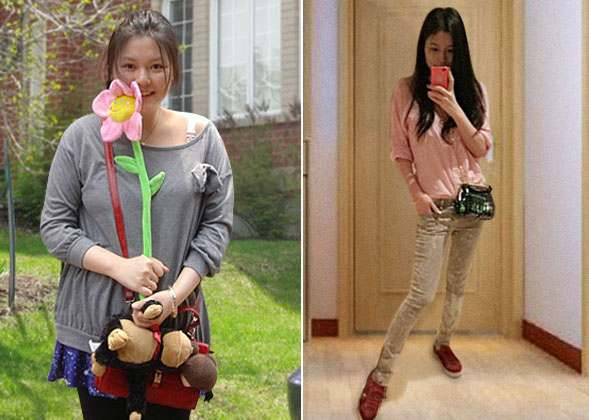
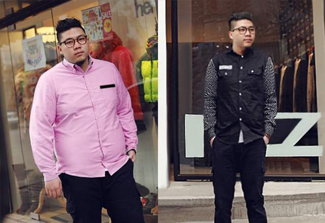
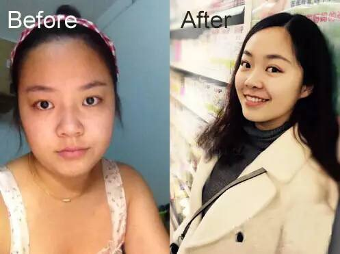
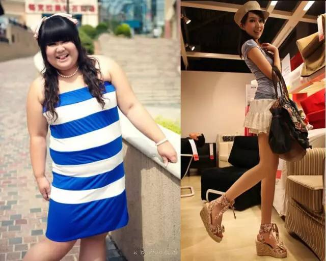

减肥不能盲目！用对方法，想减多少就减多少！
为什么减肥老失败？为什么老反弹？没用对方法！ 体质不同，生效的减肥方法也不同！用错了方法，即使暂时成功，日后也会反弹！
咨询减肥加诗诗微信号 （←复制或长按扫描下方二维码）
老师一对一的帮你找到有效的减肥方法！
在诗诗的帮助下，100000+个肥胖兄弟姐妹短时间内减掉20~80斤，减胳膊，减腿、减腰、减肚腩...瘦的快，完成华丽逆袭！
指导案例一：甩肉40斤，减肥其实没那么苦
用 户：张娜 身高：161cm
目前体重：45KG 原体重：64KG
减重成果：38斤（19KG）

没怀孕前我也是个漂亮的瘦子，怀孕后为了孩子死命的吃！原以为生了孩子会自然瘦下来，谁知孩子都2岁多了，体重一点也没减还越来越胖了！又丑又没形象，老公都嫌弃！特别想找回怀孕前的苗条身材！
为了减肥，吃了不少苦。早餐不吃、午餐吃水果，晚餐只吃蔬菜沙拉！结果经常饿得两脚发软、眼冒金星、经常喘不过气来！一个月下来，没瘦几斤，身体却出了问题，走路轻飘飘，居然还晕倒在路边！OMG！立即暂停节食减肥。
后来有朋友把诗诗的微信推荐给我。和诗诗聊过了之后，她很严肃的"批评"了我，说我以前节食减肥就是慢性自杀，破坏了代谢系统，早晚要搞垮自己！通过几次了解，她很快给出了适合我的减肥方法。
开始我保持怀疑态度，觉得减肥哪有这么容易。但没想到奇迹竟然出现了！
接下来的半个月里，体重以每天少一斤的速度瘦下来了。1个月后，体重少了20斤，2个月后又少了15斤，3个月后体重降到45KG。算一算，
前后总共减掉了38斤，比怀孕前还瘦！而且我整个人的状态非常好，完全没有什么不适感，正常吃，作息也规律，瘦下来后，整个人漂亮了一百倍！
诗诗微信号： （←长按可复制）
指导案例二：减掉60斤，肥佬变型男
用 户：王勇军 身高：176cm
目前体重：70KG 原体重：100KG
减重成果：60斤（30KG）

从部队退役后就胖了，本身又爱吃，体重很快就飙到100KG，十足的胖子。去年体检的时候检出脂肪肝、高血压，再不减肥真的因胖而死了！
发小告诉我他老婆减肥成功的事情，给了我诗诗的微信号。加上诗诗，我就急于想问她怎么减。她很专业，为了我能健康减肥，问了我很多问题，我如实回 答了。她态度很好，给我定制了一套科学的减肥方法，操作也很简单，唯一的要求是不要暴饮暴食、睡眠日夜颠倒。我就按照她给的方法和叮嘱，每天坚持！
没想到，过一段时间，突然发现|
啤酒肚像泄了气一样瘪了好多。一个月后，称
体重少了19斤。又过了一个月再称体重，好家伙，
又掉了16斤，真是嗖嗖的往下降啊。快4个月的时候，体重已经降到70KG了。去小区门诊部特意让护士帮我测了血压、血脂。护士说，
血压、血脂都正常，高兴得我差点抱住护士亲。
这一瘦，魅力也增了不少。相亲都是美女主动，见上一面就对我产生好感，如今取了个美女媳妇。所以，兄弟们，还是瘦点好啊，幸福不知道哪天就降临了。
诗诗微信号： （←长按可复制）
指导案例三：减掉38斤，胖妈变小清新
用 户：叶梅 身高：152cm
目前体重：41KG 原体重：60KG
减重成果：38斤（19KG）

天生胖，生了孩子更胖！有一次，和老公上街，看到一个肥胖的妇女走过，肚子比胸还大，厚厚的双下巴，脖子埋在肉堆里，走路特别困难。老公说，按这增长速度，明年你也是这体态了！虽说是句玩笑话，但被自己心爱的人嫌弃，心里总是不舒服，决定要减肥！
可是减肥真的太难了，试了很多产品，跑了很多步，根本减不下去，只想放弃。
看到我为减肥失败整天闷闷不乐，老公不知道从哪里帮我找到诗诗的微信，说找她靠谱！相信老公，我加了诗诗。
诗诗说我是产后发福，没有注意及时控制所以才长胖的，现在孩子大了不用喂奶，试试她的方法。照着她说的，
30天的时候，我瘦了13斤，天哪，就这么减掉了？2个月时候遇到"平台期"，有好几天没掉体重！我以为就只能瘦这么多了。诗诗让我再坚持坚持，没想到后来又瘦了，两个月的时候瘦到41KG！这期间诗诗一直在询问我的情况，真的很贴心！
女人真是瘦，才知道自己有多美。我现在是
要身材有身材，要胸有胸，别提多给老公长脸了，老公更喜欢抱着我睡觉了，哈哈哈。
诗诗微信号： （←长按可复制）
指导案例四：健康甩肉50斤，无副作用不反弹
用 户：海琼 身高：168cm
目前体重：50KG 原体重：80KG
减重成果：60斤（30KG）

减肥以前一直是我心病，试过太多方法，吃减肥餐的，针灸、拔火罐的，基本没用。最坑爹的是，有一阵子服用一有大牌明星代言的减肥产品，电视广告打得可响了，刚开始稀里哗啦拉肚子，瘦是瘦了，估计是腹泻瘦的，停用之后，体重立马反弹，太坑人！！再也不相信广告了。
在微信群有一个专门讨论减肥的大群，其中有一个叫诗诗很受欢迎，大家都找她讨教减肥方法。我也加了她。
加上诗诗，和她倒了一肚子苦水。诗诗了解我以前的减肥经历之后，说以前吃的减肥产品可能含有对人体有害的成分，停用之后身体才有这么大的反应。诗诗结合我的体质，给我健康科学的减肥方法，还推荐了一套好东东给我，收到后我立马试了！
按照她给的方法，每天坚持，体重真的有变化，因为有过之前的失败经历，我不敢高兴太早。3个多月，减了50斤，平均每个月有16斤左右，手臂啊腿啊，都瘦下去了，特别是有好几层游泳圈的腰和大屁股，都瘦出好看的线条！
我慢慢停用之后，身体没有什么不适，也没有出现反弹，一年多过去了，一直保持到现在。
诗诗微信号： （←长按可复制）
指导案例五：不累也不挨饿，100天瘦52斤
用 户：白彤 身高：163cm
目前体重：50KG 原体重：70KG
减重成果：40斤（20KG）
我是属于骨架偏小肉很多的类型，是易胖体质，还迈不开腿，管不住嘴，结果一路飙升到82KG！买衣服难，出汗多，被人嘲笑死胖子......因为胖，还一直单着。
偶然机会加了诗诗的微信，在她的朋友圈里看到很多减肥成功的指导案例，我非常心动！
开门见山就问她要产品，结果诗诗很贴心的问我的情况，我把我的饮食、作息、习惯等等如实交代，诗诗分析了我的问题后告诉我，我这种吃什么都容易胖的体质，需要调理好后，再减肥。
体质还可以调？这么专业！按照她的方法，在没有减少饮食量、没有增加运动的情况下，竟然看到身体有微妙的变化，以前连喝水都胖，现在吃甜品、肉肉，体重也没有上涨，而且身体也没有不舒服。我激动坏了！
快两个月的时候，减了30斤！持续坚持到3个多月的时候，总共减了52斤。很意外我的大胸竟然没缩水！
衣服从之前的XL直接变成M，衣柜也塞满美美的衣服。朋友都说认不出我来了，变得特别有气质！如果不是诗诗指导有方，这辈子可能都尝不到做瘦子的甜头了！太感谢了！
诗诗微信号： （←长按可复制）
跟她咨询了很多问题，都很耐心的解答了，一开始还担心效果问题呢，昨天称了，一个多月体重轻了20多斤呢，确实不错！
回复
效果还可以，半个月瘦了10斤，腹部和腰围都减了4公分。后来因为某种原因没再坚持下去，但也没见反弹。会介绍更多的朋友的哦！
回复
高中毕业开始发胖，才几个月就胖了20多斤，上大学看到别人的身材自己都不敢穿裙子出去了。后来听朋友介绍诗诗，抱着试试的想法来了。没想到减了30斤，太惊喜了，现在穿裙子上街都特别自信！
回复
减肥老不成功！大肚子，腿粗，皮肤也差，彻底受到了打击，才20多岁就被人叫大妈。幸亏找到诗诗，按着她给的方法去执行，瘦得特别快。没节食没运动，照样瘦了！减了20多斤，我很满意，简直像回到了18岁！
回复
生完宝宝之后一直瘦不下来，肥腿粗腰肥大腿！可苦恼了，后来在一个宝妈QQ群得了诗诗的微信，说她的减肥方法很不错，是根据体质定制的。加了她讨了方法，老实执行。没想到真的瘦了，减了差不多20斤！开心死了！
回复
为了当美美的新娘减肥！我体虚，不敢节食太厉害。后来听诗诗说只要按照她的方法去做，不用节食。就这样我边吃好吃的，边减肥，没想到，竟然减了18.8斤，不敢相信！瘦了穿婚纱特美！谢谢你啦！
回复
我不算很胖，但我就不喜欢过百的那种感觉，以前不管怎么努力都没有用。加了诗诗，提了再瘦10斤的要求。按诗诗的方法坚持了40天，瘦下来15斤了，减了大腿和肚子，真的太有效了，非常满意，非常满意，非常满意，重要的事情说三次！！！
回复
大腿一直胖，腰也瘦不下来，后来咨询了诗诗，她根据我的情况定制了合适的方法，1个月后还真的瘦了，闺蜜们看到都让我介绍给她们，哈哈，真赞，效果很不错。爱你诗诗！
回复
这几年因为胃口比较好，吃得多，又爱宅，所以胖了。用过很多产品一直没减成功。遇到了诗诗，给了不用节食的方法，竟然有效！一下子减了十几斤，也没有什么不舒适的情况。瘦了之后变帅了，哈哈哈，最近还交了个女朋友！
回复
查看更多评论（1916）
长按下方按钮复制并添加微信号
版权所有：丰胸达人吧